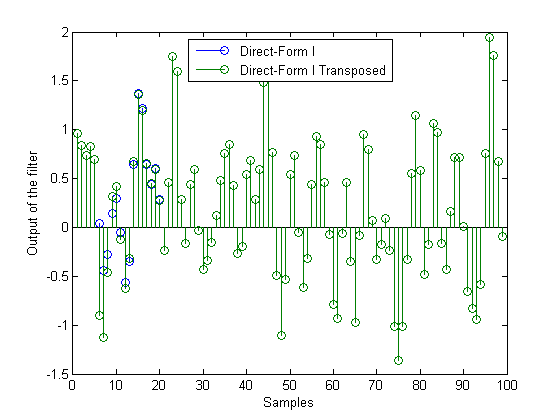
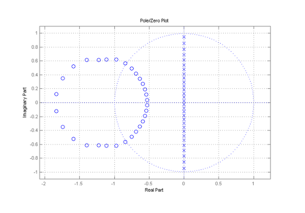
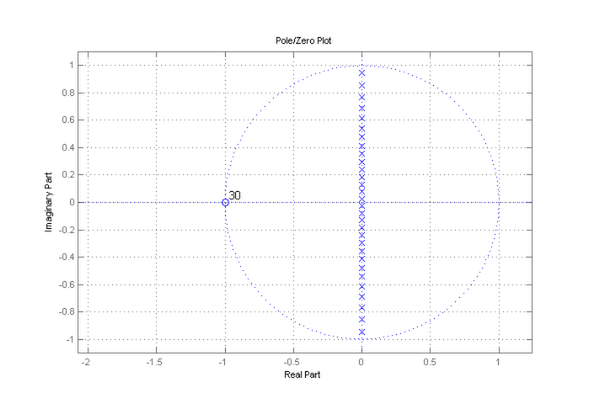
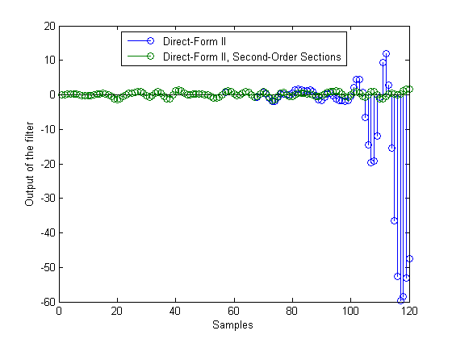
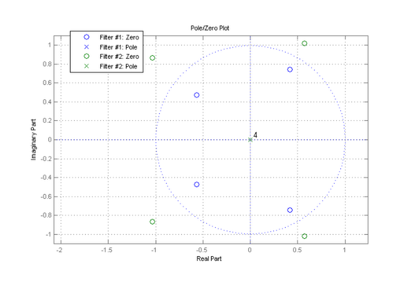

Advanced Filtering with Discrete-Time Filter (DFILT) Objects
The filtering operation is implemented for different structures. This is far more flexible than the usual FILTER(b,a,x) function which always implements transposed direct-form II. Another benefit of filtering with objects comes from the fact that the states of the filter can be saved after each filtering operation. This demo discusses both features.
Contents
Filtering without Initial Conditions
By default, the states of the filter, stored in the 'States' property, are each initialized to zero. Furthermore the 'PersistentMemory' property is false which means that the object is reset before the filter is run. This allows to filter the same sequence twice and produce the same output.
f = fdesign.lowpass('N,F3dB',5,.5); hsos = design(f,'butter'); % 5th-order IIR filter hdf1 = convert(hsos,'df1'); % Direct-form I implementation hdf1t = convert(hdf1,'df1t'); % Transposed direct-form I implementation hdf2 = convert(hdf1,'df2t'); % Direct-form II implementation x = ones(5,1); y1 = filter(hdf1, x)
y1 =
0.0528
0.3167
0.8111
1.1718
1.1196
y2 = filter(hdf1, x)
y2 =
0.0528
0.3167
0.8111
1.1718
1.1196
Specifying Initial Conditions
The user can specify initial conditions by turning the 'PersistentMemory' property true and setting the 'States' property. If a scalar is specified, it will be expanded to the correct number of states. If a vector is specified, its length must be equal to the number of states. For example:
x = randn(99,1); hdf1.PersistentMemory = true; hdf1.States = 1; % Uses scalar expansion ydf1 = filter(hdf1,x); hdf1t.PersistentMemory = true; hdf1t.States = 1; % Uses scalar expansion ydf1t = filter(hdf1t,x); stem([ydf1, ydf1t]); legend('Direct-Form I', 'Direct-Form I Transposed',0) xlabel('Samples'); ylabel('Output of the filter')
Notice how the two filtered sequences are different at the beginning. This is due to the initial conditions. Since the filter structures are different, the effect of the initial conditions on the output is different. As the effect of the initial conditions dies out, the two sequences become the same.
Streaming Data
Setting the 'PersistentMemory' property true is a convenient feature for streaming data to the filter. Breaking up a signal and filtering in a loop is equivalent to filtering the entire signal at once:
close hdf1.States = 1; xsec = reshape(x(:),33,3); % Breaking the signal in 3 sections ydf1loop = zeros(size(xsec)); % Pre-allocate memory for i=1:3, ydf1loop(:,i) = filter(hdf1,xsec(:,i)); end
We verify that ydf1loop(signal filtered by sections) is equal to ydf1 (entire signal filtered at once).
max(abs(ydf1loop(:)-ydf1))
ans =
0
Multi-Channel Signals
If the input signal x is a matrix, each column of x is seen by the filter as an independent channel.
x = randn(10,3); % 3-channels signal
y = filter(hdf2,x)
y =
0.0007 -0.0411 -0.0480
0.0755 -0.1619 -0.2686
0.3678 -0.0659 -0.5726
0.6735 0.6615 -0.4878
0.4039 1.3664 -0.0073
-0.3217 0.6997 0.0153
-0.4069 -0.8834 -0.4746
0.4377 -1.1897 -0.3583
0.9348 0.1543 0.1746
0.3087 1.0250 -0.2258
states = hdf2.States
states = -0.4824 0.5273 -1.0630 -0.4801 0.0471 -0.7886 -0.3423 0.5259 -0.5034 -0.1582 0.2088 -0.1214 -0.0273 0.0543 -0.0146
Notice that the object stores the final conditions of the filter for each channel, each column of the 'States' property corresponding to one channel.
Working with Second-Order Sections
From a numerical accuracy standpoint, it is usually preferable to work with IIR filters in second-order sections (SOS) form and avoid forming the transfer function. FDESIGN objects design IIR filters in SOS form by default and DFILT objects provide fine-tuned analysis algorithms for SOS filters that avoid the numerical problems associated with transfer functions.
f = fdesign.lowpass('N,F3dB',30,.5); hsos = design(f,'butter');
First we will illustrate the problem of working with transfer functions for analysis purposes. All zeros are supposed to be at z = -1.
[b,a] = tf(hsos); hfvt = fvtool(b,a, 'Analysis', 'polezero'); set(hfvt, 'Color', [1 1 1])
Now we compare to using SOS DFILT objects. We use df2sos in this example but df1sos, df1tsos and df2tsos are also available.
set(hfvt, 'Filter', hsos); % All zeros are where they should be
Filtering with Second-Order Sections
In addition to improved analysis, filtering should also be performed using second-order sections. In the example below we compare filtering using the transfer function with filtering using SOS. The transfer function filter is actually unstable. You can see this in the plot by looking at the output of this filter (in blue). The output begins to grow without bound, a symptom of instability. In contrast, the output of the SOS filter (in green) remains bounded.
f = fdesign.lowpass('N,Fp,Ap,Ast',30,.4,.1,60); hdf2sos = design(f,'ellip','FilterStructure','df2sos'); hdf2 = convert(hdf2sos,'df2'); % Direct-form II implementation of filter x = randn(120,1); ydf2 = filter(hdf2,x); % Filter a random signal using direct-form II ydf2sos = filter(hdf2sos,x); % Filter the same signal using SOS stem([ydf2, ydf2sos]) % Result should be the same, but it isn't set(gcf, 'Color', [1 1 1]); xlabel('Samples'); ylabel('Output of the filter') legend('Direct-Form II', 'Direct-Form II, Second-Order Sections',0)
Other Filter Structures
In addition to direct-form filters and corresponding SOS filters, DFILT objects can simulate other filter structures.
FIR lattice structures usually arise in the context of linear prediction. If the lattice coefficients (also called reflection coefficients) are all less than one in magnitude, we can implement either a minimum-phase or a maximum-phase FIR filter.
close k = [.1;.2;.3;.4]; hmin = dfilt.latticemamin(k); % Minimum-phase FIR filter hmax = dfilt.latticemamax(k); % Maximum-phase FIR filter set(hfvt, 'Filter', [hmin, hmax]);
Other filter structures available are allpass and ARMA lattices and state-space structures.
hallpass = dfilt.latticeallpass(k); % Allpass lattice filter v = 1:5; harma = dfilt.latticearma(k,v); % ARMA lattice filter [A,B,C,D] = ss(harma); % State-space model of ARMA lattice hss = dfilt.statespace(A,B,C,D); % State-space filter
See also dfiltdemo.m